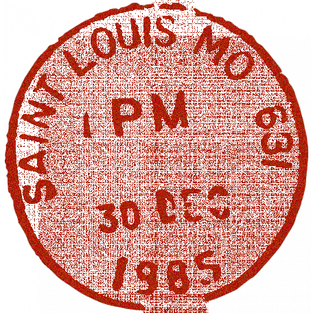

Dear John/Jane Doe,
From Namiya

It took all my brainpower to understand why you would bother to send me a blank sheet of paper.
I’m an old man, after all. But I knew this had to be something extraordinary. I could spare not effort in crafting my response. My mind isn’t what it used to be, but I whipped it into shape, and I think I have finally managed to parse things out.
This blank sheet symbolizes the absence of a map. Compare the people who write to me as lost, astray. In most cases, they have a map, but just won’t look at it, or don’t know how to find their own location.
But my guess is neither applies to you. Your map has yet to be drawn. Which makes it impossible to decide where you’re going, much less how you’re going to get there.
Faced with a blank map, who wouldn’t feel lost? It would puzzle anyone.
But try this on for size. A blank map means you can fill it in however you like. It’s entirely up to you. Everything is open; the possibilities are limitless. It’s a beautiful thing.
I can only hope this helps you find a way to start believing in yourself, and to move through life with no regrets.
I thought I would never get to answer another letter.
It gives me great pleasure to end on such a thorny riddle.